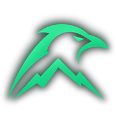

ODIN
Outland Digital Independent Network
Your world. Your network. Your rules.
ODIN is one app for the movies, shows, comics, books and music you already own. It plays them from your own server at home, to your phone, wherever you are. No ads, and nothing sent to us.
Private beta on Android and iPhone. Store release to follow.One app, every library
Each kind of media gets a screen built for it
Point ODIN at the folders you already have. It reads them, finds artwork and details, and never changes your original files.
MOVIES
Poster wall to play button
Browse by poster, resume where you stopped, and pick a quality that suits your connection.
TV SHOWS
Seasons, episodes, playlists
Pick up the next episode, see what is new this week, and build playlists across shows.
COMICS
A reader made for pages
Series, volumes and issues kept straight, CBZ and CBR files, and reading events across series.
BOOKS
Ebooks with real typography
Covers, authors and series, with bookmarks and notes that stay on your phone.
AUDIOBOOKS
Chapters and narrators
Listen by chapter, with narrator and series details filled in for you.
MUSIC
Your albums, your queue
Albums, artists and recently played, from your own collection.
How it works
Your server, your phone, nobody in between
ODIN has two parts: a server that runs on hardware you own, and the app.
Run the ODIN server
Install it on a NAS or a home computer and point it at your media folders. It reads them and never writes to them.
Pair the app
Open ODIN on your phone and pair it with your server on your home network.
Invite your people
Send an invitation by email and choose which libraries each person sees. Everyone gets their own account, progress and ratings.
Watch from anywhere
Connect securely from outside your home. Your server converts video to fit the connection when it needs to.
What we promise
Independent by design
No accounts with us
You sign in to your own server. Outland Dynamics runs no servers for ODIN.
No tracking
No analytics, ads, or crash-reporting services. The server never contacts us.
Your files stay yours
Original media is read, never modified. Artwork and conversions go in the server's own folder.
Works without us
The app and server never phone home to us. If we disappeared tomorrow, your server would keep running.
Pricing
Pay once. That's it.
Each person buys ODIN once from the App Store or Google Play. On iPhone you can try it free for 7 days first. No subscriptions, no ads, no features held back, and every update included.
Made by
Outland Dynamics
ODIN is made by Outland Dynamics LLC, an independent software company in Fort Collins, Colorado.
Get in touch
Questions, bug reports, or interested in the beta? Visit Support.